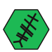

Ogma - Personal Spotify Wrapped
Inspired by the Celtic god of eloquence and learning, Ogma is a simple github repository activated by a GitHub Action that generates a Spotify Wrapped-like summary of my listening habits (weekly and monthly)

Context
After the yearly Spotify Wrapped dropped, I became curious to get more data and on a more regular basis. The yearly wrapped is fun and you can see your new discoveries of the year but the data you get is only the one they want to show you, and you can't get it more than once a year. I wanted to have a more complete and regular overview of my listening habits, so I created Ogma. The name comes from the Celtic (Ogam for the Irish and Scottish and Ogios for the gallic) god of eloquence and learning, who is said to have created the Ogham alphabet. I find the the name fitting as Ogma is a tool allowing me to inscribed and save my listening habits.
Realization
Using the Spotify API is quite easy to use to get data, however, there is no streaming history per se.
You cannot simply ask for your last month or more of listening history. You can get the last 50 tracks played, nothing more.
I had to go around and build the history myself, using a GitHub Action running everyday to get the last 50 tracks played and add them to a .json file inside the repository.
This is the first real limitation, as if I listen to more than 50 tracks a day, I will lose informations on the tracks listened to earlier in the day.
It can be estimated that the time required to listen to 50 tracks oscillates between 2h40 and 3h30, depending on the genre of music.
To be sure to not lose any data, it is possible to simply run the GitHub Action more often, but the number of times I would listen to more than 50 tracks a day is not that high and running so many useless GitHub Actions
would be a waste of resources.
For each track, it aso recovers the name, artist, album and genre, to get a more complete overview.
Then once per week a second GitHub Action is triggered to generate the weekly summary with the top 10 tracks, top 5 artists and genre and top 3 albums, as well as purging the previous history.json.
But before purging, the history.json is pushed to the repository of website, so that I can display the summaries here at listeningRoom.html.
It was fun to learn about the API calls and GitHub Actions, how to manage them and how to use them to recover data.
Future
There are a few ideas and projects that I want to create and implement in the future.
- Implement the visualization of the data and summaries inside listeningRoom.html
- Compare to the data recovered through the Last.fm API because it's probably easier and without loosing data, ...
Evolutions
- October 2026
- Added the monthly summary.
- September 2026
- Added the album covers and genres.
- September 2026
- Start of the project.